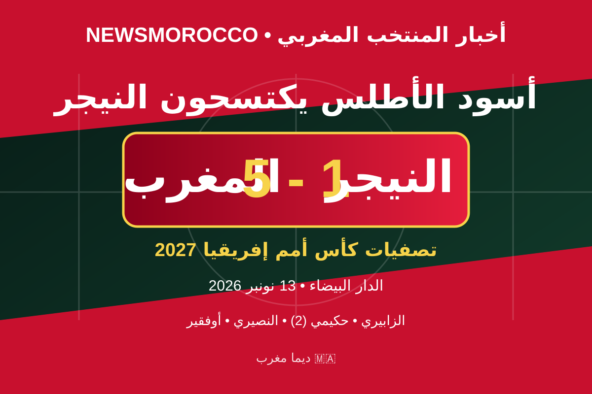

المنتخب المغربي يكتسح النيجر بخماسية مقابل هدف في تصفيات كأس إفريقيا 2027

حقق المنتخب الوطني المغربي فوزاً عريضاً على نظيره منتخب النيجر بنتيجة خمسة أهداف مقابل هدف واحد، في المواجهة التي احتضنها ملعب محمد الخامس بمدينة الدار البيضاء، ضمن منافسات تصفيات كأس أمم إفريقيا 2027.
أسماء مسجلي الأهداف
- ياسير الزابيري: الدقيقة 4.
- أشرف حكيمي: الدقيقتان 27 و45+3.
- يوسف النصيري: الدقيقة 77.
- أيوب أوفقير: الدقيقة 90.
- محمد عبد الرحمن: هدف النيجر في الدقيقة 41.
حكيمي يقود مهرجان الأهداف
شهدت المباراة تألقاً هجومياً للعناصر الوطنية، بعدما افتتح ياسير الزابيري التسجيل مبكراً، قبل أن يضيف أشرف حكيمي هدفين، ثم عزز يوسف النصيري وأيوب أوفقير النتيجة في الشوط الثاني. وانتهت المواجهة بانتصار مغربي بخماسية مقابل هدف.
ويواصل المنتخب المغربي بهذا الفوز مشواره في تصفيات كأس أمم إفريقيا 2027، وسط تطلعات الجماهير لمواصلة النتائج الإيجابية.
ديما مغرب! ديما أسود الأطلس! 🇲🇦
إعداد: NewsMorocco
← العودة إلى آخر الأخبار